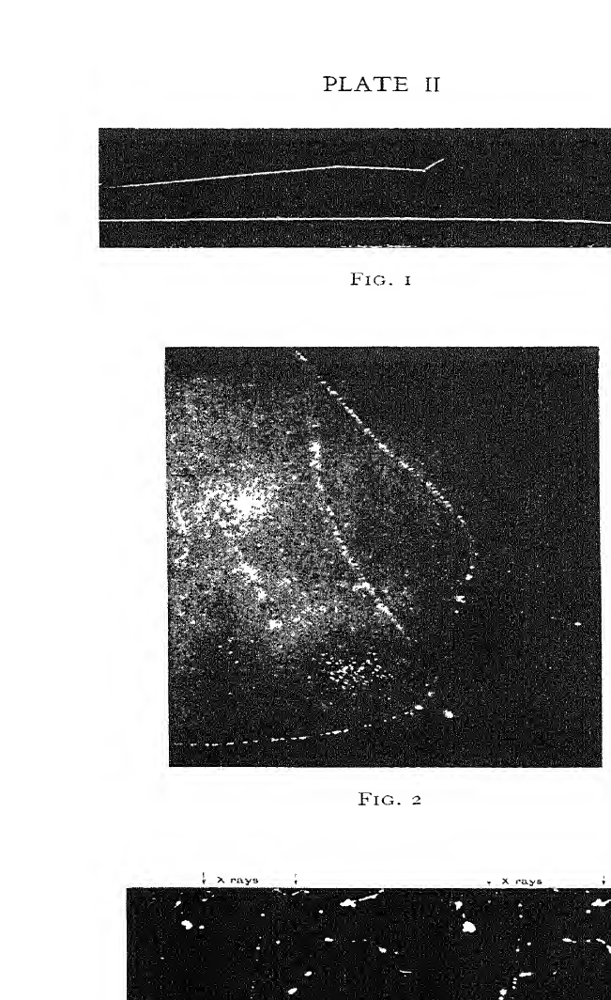
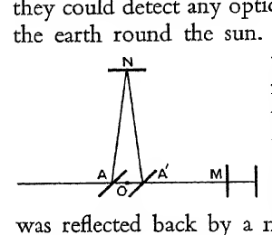

Chapter XII#
Physics in my Time#
When I began research in physics in the early seventies, the subject which was exciting most interest was the “Light Mill”, or radiometer, invented by Sir William Crookes. This, in its commonest form, was four thin mica discs fastened to the ends of a horizontal cross which could spin round on a pivot supported in a glass cup. These were enclosed in a glass vessel which contained air at a very low pressure. The vanes were blackened with lamp-black on one side but were bright on the other, and when exposed to light they rotated round the pivot, the direction of rotation being the same as if the blackened side were repelled by the light. These light mills aroused the interest of the general public, and shopkeepers had them rotating in their windows to attract a crowd. The discovery of the radiometer by Crookes was a triumph of vigilance in observation and accurate measurement. When he was making very accurate weighings to determine the atomic weight of thallium, an element he had lately discovered, he found small discrepancies which he could not account for by any known source of error. He set himself to discover the origin of these, and by ingenious experiments convinced himself that they were due to the light falling on the balance. This led him to make ad hoc experiments on the effect of light on delicately poised pieces of metal, and hence to the discovery of the radiometer. At first the rotation was
The Radiometer#
ascribed to the pressure of the light itself. Maxwell had shown that, on his electromagnetic theory of light, light ought to exert a pressure on surfaces on which it falls, and this pressure was detected in 1901, nearly twenty years after the discovery of the radiometer, by the Russian physicist Lebedew. This pressure is, however, far too small to account for rotations as great as those observed in the radiometer, and the rotation would be in the opposite direction. For suppose a light particle, a photon, fell on the blackened surface of a vane of the radiometer, it would be absorbed and would give up its momentum to the vane. If it were to fall on the bright surface, it would be reflected and would possess a momentum, equal in magnitude to that it possessed before striking the vane, but in the opposite direction, the reflecting vane would recoil with a momentum equal and opposite to that given to the reflected photon; thus the reflection from the vane would double the momentum it would receive if the photon were merely absorbed. Thus the bright surface would be repelled by the light more than the blackened one, while in the radiometer the repulsion is less. Another very ingenious test was suggested by Osborne Reynolds, and carried out by Schuster. If the rotation were due to the pressure of the light on the vanes, it would not set up any rotation in the glass vessel in which the vanes were contained, but if it were due to effects inside the radiometer, then, by the principle that action and reaction are equal and opposite, if the vanes rotated in one direction the glass case must rotate in the opposite. The experiment was made in the laboratory of the Owens College; the radiometer was suspended by a fine thread so that it could rotate freely if it wanted to. I can still remember the excitement and anxiety with which I waited for the verdict, and the relief
on hearing that the case had rotated in the opposite direction to the vanes. The cause of the rotation of the vanes is that the blackened surfaces get hotter than the bright ones owing to their absorbing more light. When the molecules of the gas strike the blackened side they get hotter, and shoot off with a higher velocity than after striking the colder bright one, thus the kick or recoil is greater on the blackened surface than on the bright. His experiments on the radiometer led Crookes to study other phenomena in gases at very low pressures. In his time the production of a good vacuum was lengthy, tedious and arduous. The only means available were Sprengel or Topler pumps; both these required the continual raising and lowering of a vessel full of mercury, and it often needed a morning’s pumping to get a vacuum good enough for the most important experiments. With the pumps now available a much better vacuum can be got in a few seconds. The introduction of electric light made the production of vacua a matter of commercial importance, as the air had to be pumped out of the lamps. This set inventors at work to produce a pump which should be automatic and rapid. The first satisfactory automatic pump was invented by Gaede in 1905, and from that time there has been a steady stream of automatic pumps working on a great variety of principles. Gaede himself has invented at least three different types of pumps, while successful pumps have been introduced by Langmuir, Waran and others. Some of these, it is claimed, can deliver five or more litres per second, and can reach a vacuum where the pressure is only one-thousand-millionth part of atmospheric pressure. This means that, of the molecules present in the vessel before the pumping began, only one in a thousand millions is left after it has been completed. And what is even more im-
Pumps#
portant for the investigation of the properties of matter is that the odds against one molecule coming into collision with another when it passes over a length of one metre is about 70 to 1. Thus, even in very large vessels, a molecule behaves as if no other molecules were present. At these pressures we can study the properties of individual molecules when they can do as they wish, whereas at considerably higher pressures we can only study their behaviour in a dense crowd when they have to do what the crowd dictates. The improvement in recent years in the production of high vacua is an example of the advantages which accrue to the study of any branch of science when it has industrial applications; then the improvement of any technique becomes of commercial importance on which large sums may be profitably spent. The manufacture of vacua is an important industry. Kaye in his book High Vacua quotes Dr. Whitney as saying, when he was President of the General Electric Company of America, that the American public alone purchases “over a million dollars’ worth of glass vacua yearly”. This was ten years ago, and in the interval the demand for vacua for electric lighting and wireless has much increased all over the world. I should think it would be an underestimate to put the trade in vacua, taking all countries into account, as 100,000,000 pounds sterling a year.
The improvement in the pumps since 1905 has been in the speed with which they work. The method of producing vacua (absorbing the gas by charcoal cooled by liquid air) introduced by Dewar at the beginning of this century produced as good, and in some respects better, vacua than any method since introduced; the only objection is that it is much slower. Owing to Dewar’s discovery, physicists since the beginning of this century have been in possession of a means of studying matter in so rarefied a state that each particle acts independently of its neighbours. This has been of supreme importance to the progress of science. Crookes’ experiments on the passage of electricity through gases were made before Dewar vacua had been invented, but by improving the Sprengel pump he was able to get down to pressures of about 1/1000 of a millimetre, when the free path would be comparable with 7 cm., which would be low enough to give a molecule a fair chance of getting across the tubes he was using without a collision. His most striking experiments were made on cathode rays, a name given by the German physicist, Goldstein (who spent a long life in studying the electrical properties of gases), to something travelling in straight lines from the cathode when an electric current passed through a gas at low pressure, and producing phosphorescence when they strike against the walls of the box. They were first observed by Plucker in 1859. The nature of these rays became almost an international question. The German physicists, with the significant exception of von Helmholtz, regarded them as waves; the English, I think without exception, thought they were atoms or molecules of the gas charged with negative electricity. The contest between these views went on with great vigour. Further research has shown that neither side was wholly right nor wholly wrong. The cathode rays are particles charged with negative electricity, but these particles are not atoms or molecules, but electrons - very much smaller bodies - and these electrons are accompanied by waves.
Crookes was a very skilful experimenter and he had the gift of arranging his experiments so that, in addition to their scientific importance, they were among the most striking and beautiful spectacles known in physics. With
Sir William Crookes#
these he delighted, almost yearly, crowded audiences at the Friday Evening Discourses at the Royal Institution. His experiments led him to the conception of a fourth state of matter, a state in which the molecules were so far apart that they could travel across the vessel in which they were contained without coming into collision with other molecules. He said, and said quite truly, that when this is the case the properties of the gas will be quite different from those of a gas at higher pressures, when the molecules can hardly stir without hitting against other molecules. This is a necessary and very interesting consequence of any molecular theory of gases, and it was never more beautifully illustrated than by Crookes’ experiments. It does not, however, tell us anything about the molecules. It was discovered later that the cathode rays were not molecules but very small particles called electrons, which had been knocked out of the molecules of the gas, and that these small particles were of the same kind from whatever kind of molecules they proceeded, showing that the electron is a constituent of every kind of substance. Crookes himself became a convert to the electron theory and said, “What was puzzling on the radiant matter theory is now precise and luminous on the electron”.
Crookes was in many ways unlike other English men of science. His well-waxed moustache gave him a somewhat foreign appearance; he was not, as most of them were, connected with any university or college. He was a director of public companies, the proprietor and editor of a journal, gas inspector and expert witness, and at one time he owned a gold mine; he did his work in a laboratory of his own. His training, too, had been different from that of his contemporaries. He left school
when he was fifteen and went to the Royal College of Chemistry, where Hofmann, an eminent organic chemist, was Professor. Here he specialised in chemistry, and showed the individuality which was characteristic of him by working at inorganic chemistry, while the other pupils, including Perkins, the discoverer of aniline dyes, followed the example of the Professor, and worked at organic. His knowledge of mathematics was of the most rudimentary description, and he had never been through any course of instruction in physics. He picked up his physics as he wanted it for the research in which he was engaged, and could rely on being able to get Stokes’ advice when he got into difficulties on theoretical questions. Stokes took great interest in his experiments and had a very high opinion of them; he says (Memoir of Sir George Gabriel Stokes, by Sir Joseph Larmor, vol. i. p. 353), “For enlarging our conceptions of the ultimate working of matter, I know nothing like what Crookes has been doing for some years”. In the second volume of the Memoir some of Stokes’ letters to Crookes are printed. They cover 133 pages; on one occasion at least there were two on one day. Crookes found Stokes’ handwriting so difficult to read that he had to call to his aid the head printer of the Chemical News, a journal which Crookes had founded in 1861, and of which he was then proprietor and editor.
Stokes, it may be said, was one of the first to use a typewriter, but these were not available in time for the earlier letters. I remember hearing Stokes urging J. C. Adams to get one, and Adams said, “Why should I? People can read my writing.”
Crookes’ success was due not only to his skill as an experimenter, but also to his powers of observation. He was very quick to observe anything abnormal and set to
work to get some explanation. He tried one thing after another in the hope of increasing the effect, so as to make it easy to observe and measure; his work on the radiometer and the cathode rays are striking examples of this. In his investigations he was like an explorer in an unknown country, examining everything that seemed of interest, rather than a traveller wishing to reach some particular place, and regarding the intervening country as something to be rushed through as quickly as possible.
Between his investigations on thallium and those on the radiometer, i.e. between 1870 and 1874, Crookes was mainly occupied with investigations on what he called “psychic force”, which excited the interest of the public, and much criticism and obloquy from the great majority of men of science, who maintained that the results were worthless, and were produced by fraudulence on the part of the mediums. Now after sixty years, in which there have been many investigations made on the subject, opinion is much the same. Sir Oliver Lodge maintains that though a medium may be detected in fraud it does not necessarily follow that he has no psychic power. His view is that the medium is out to produce certain results, and that he will produce them with the least expenditure of effort, and, if the control is so lax that it is easier to produce them by conjuring than by his psychic powers, he will conjure.
The phenomena observed by Crookes were produced by mediums all of whom at one time or another had been detected, or had confessed to using fraudulent methods to obtain their results. By far the most important of these was D. D. Home, an American who came to London in
1869, and gave spiritualistic seances which became very fashionable and were very largely attended. He must have had very attractive manners; he won the affection and confidence of Crookes and his wife; he was adopted as a son by a wealthy lady who is said to have lavished 50,000 pounds upon him (which she afterwards tried to get back); he was the Mr Sludge in Browning’s poem, “Mr Sludge the Medium”. He was a medium of quite exceptional power, and had the great merit of being able to produce his effects in the light. This, of course, made trickery much easier to detect. Some conjurors, however, can do their tricks in a good light by distracting the attention of the observers. When dealing with mediums whose honesty is not beyond question it is necessary, before we can attach importance to their results, to be sure that no such distractions have taken place. Some of the most striking of Home’s results could have been produced by a movement of a finger through a few inches. The possibility of hallucination cannot, I think, be regarded as altogether impossible. On page 265 of the Life of Lord Rayleigh, by his son, there is the following passage: “Lady Crookes … mentioned that at their seances they had been sitting round a particular table for some days, then they put it aside and took another. The first table came out from its corner apparently to attack the other, which leaped on to the sofa, was pursued by the first and they had a fight there. Crookes, when appealed to, said he knew nothing about motives, but corroborated the facts.”
The phenomena obtained by Home were physical ones, tilting of tables, playing on accordions, production of floating luminosities and the like. Crookes’ view was that these were not produced by spirits but by something coming from the medium himself, which he called psychic
force. This force he supposed to act much as ectoplasm does in some modern theories.
The experiments which he describes were made in his dining-room, which was lit by a gas-jet of about 5 candle-power. The simplest and most important experiment was that supposed to prove that Home could alter the weight of a plank. A plank about 10 lbs. in weight was supported in a horizontal position: one end was attached to a spring balance to register its weight; the other end rested on a knife-edge, which stood on a table, and in the experiments Home was supposed to press on the part of the plank between its free extremity and the knife-edge. Crookes and his wife sat on either side of him to see that the pressure was applied at this place, and with one foot on the foot of Home nearest to them. Under these conditions the spring balance indicated an increase of weight amounting in one case to nearly 12 oz. Crookes in June 1871 communicated to the Royal Society a paper containing an account of this and some other experiments made with Home. The Committee of Papers, at their first meeting after the receipt of the paper, postponed their decision for a fortnight. Crookes heard of this: he wrote at once to Home: “I want you therefore to help me by giving me three evenings, between now and the 27th inst., at which I can repeat the increase of weight experiment in the presence of one or two other good witnesses, and then send in on the 28th an overwhelming mass of evidence which the committee can’t reject”. He sent in a further paper on June 28th, but it does not seem to have contained an account of any further seances with Home. The paper came before the Council of the Society and was unanimously rejected. This course seems to me to have been
entirely justifiable. Here was a discovery of stupendous importance, and at first sight of the utmost improbability, while the value of the evidence depended on the good faith of Home, a man of whose honesty there were grave suspicions, though Crookes believed in him implicitly. It is true that the experiments were not made in darkness and that some precautions were taken against fraud, but were these such as to make fraud impossible? Might not Home sometimes succeed in distracting the attention of the observers and then do his trick? He ran very little risk, for if he could at a seance not manage to elude the vigilance of the others, he had only to refrain from doing anything and say that his psychic power had failed. Crookes in a letter to Huggins says: “Home was in wonderful form last night, but he is the most uncertain of mediums, and it is quite as likely that the next time absolutely nothing will take place”.
Crookes published what were substantially the papers he sent to the Royal Society, in the Quarterly Journal of Science and also in the Chemical News. These met with severe criticism, which Crookes answered with much vigour; he proved to be an excellent controversialist. His account of an interview he had with one of his most persistent critics, Dr. W. B. Carpenter, who was rather long-winded and had no inferiority complex, is very good reading. It is given in Fournier d’Albe, Life of Crookes, p. 213.
Crookes’ active work on spiritualism was confined to the years 1870-74, when he returned to physics and discovered the radiometer. He retained, however, his belief in it until the end of his life and tried, after the death of his wife, to get into communication with her through a medium. He avowed his belief on many occasions; e.g.
in his Presidential Address to the British Association at Bristol in 1898 he said: “I have nothing to retract: I adhere to my already published statements. Indeed I might add much thereto.” It is more than sixty years since Crookes gave up psychical researches, and we do not seem any nearer a conclusive proof of their reality than we were then. The aid of infra-red light has recently been used to determine what is going on in dark seances, but the results obtained so far are inconclusive. If we could get infra-red light intense enough to produce photographs with very short exposure, we might “film” a dark seance and detect any cheating in that way. As far as I know, no undisputed record of any spiritualistic phenomenon has been obtained.
I have quoted Crookes’ allusion to spiritualism in his Presidential Address: the subject turned up again at the same meeting, in a much less formal manner, at the Red Lion dinner. This is a function which occurs near the end of the meeting, whose aim is to get amusement rather than instruction out of the proceedings of the Association. Each President has a shield, with his name, crest and motto displayed upon it, hung on the walls of the reception room. The motto on Crookes’ shield was “Ubi Crux, ibi Lux.” At the Red Lion dinner a distinguished chemist got up and unrolled somewhat nervously a shield which was a copy of Crookes’ shield in everything except the motto, which was changed to “Ubi Crookes, ibi Spooks”. Crookes took this in very good part.
The interest taken in the subject of the passage of electricity through gases began to increase rapidly towards the end of the seventies. This was to a large extent because its vital importance in connection with the structure of molecules and atoms was beginning to be realised, and
also because the phenomena associated with it were very various and of exceptional beauty. In England, besides Crookes, De la Rue and Hugo Muller, Spottiswoode and Moulton, and in Germany, Goldstein and Hittorf, made important advances at this early stage. Both De la Rue and Spottiswoode were of a class which has made more important contributions to science in this country than it has in any other. I mean the class who pursue science as a hobby and not as a profession, who work in laboratories of their own, and whose experiments are made at their own cost. Joule, who measured the mechanical equivalent of heat, was a brewer; Darwin a country gentleman. This class is not so numerous as it was; as the costs of a physical laboratory are so great that only very rich men can afford them.
De La Rue#
De la Rue was the head of a great firm of manufacturing stationers, known all over the land since their name appeared on most of the playing-cards used in this country, and Spottiswoode was the head of a very large printing business. The experiments of De la Rue and Muller on the very interesting and beautiful phenomenon known as the “striated discharge” are of exceptional interest, and the plates they published in the Philosophical Transactions are still the best pictures we possess of this phenomenon, and have been reproduced in most textbooks dealing with electric discharge. This is probably because they used, for producing the discharge, a battery of a very large number of chloride of silver cells, which give a steadier current than induction coils, and, as the striations are steadier, the photographs have better definition. The Friday Evening Discourse at the Royal Institution at which De la Rue gave an account of these experiments was on a heroic scale. The preparation of the experiments for the
lecture took, I believe, nine months; a battery of 18,000 cells was set up in the Institution, and it was rumoured that many hundreds of pounds had been spent on the preparation. I have no difficulty in believing it. The weather unfortunately was wretched.
The two papers by Spottiswoode and Moulton on “Intermittence in the Electric Discharge” (Phil. Trans., Part I, 1879, Part II, 1880) have never received the attention which I think they deserved. This may be because they are both very long and rather soporific. In spite of this they contain much that is valuable. It is interesting to note that, though Moulton was a Senior Wrangler and Spottiswoode President of the London Mathematical Society, there is not in these two long papers a mathematical symbol from beginning to end. The experiments described in these papers, and which gained for him the Fellowship of the Royal Society, were, as far as I know, the only experiments Moulton ever made. He had made none before either at school or Cambridge. They were made soon after he went down from Cambridge and whilst he was preparing for the Bar. After he had been called he rapidly acquired a very large practice, and had no time for research. His mind worked with wonderful rapidity; the marks he got in the Mathematical Tripos when he was Senior Wrangler were more than double those of the Second Wrangler, who became a very eminent mathematician. I witnessed a striking instance of his mental agility, as I was in court during the trial of a suit which the owners of the patent for the “three wires system” of electric wiring brought against various electric lighting companies for alleged infringement of this patent. The patent had been taken out by Dr. John Hopkinson, but he did not at the time attach much im-
portance to it, and sold it for a very moderate sum. It turned out, however, to be exceedingly valuable and many millions were involved in the trial. The Bar on either side was about three deep in Q.C.‘s (it was in Queen Victoria’s time), and Moulton was leading for the infringers. The plaintiffs called Lord Kelvin (then Sir William Thomson) as a witness on their side. After his examination-in-chief Moulton got up to cross-examine. He really had a very poor case, and at first seemed to be asking questions without any connexion with each other. In answering one of these, a quite simple one, Thomson made an unaccountable slip and Moulton sprang at him in a flash: “Sir William, you say this”. Thomson had only said it a few seconds before, so he said he had. “Then”, said Moulton, “this follows”; and it certainly did. From this admission he got another as a logical sequence, and so on, until these together seriously damaged the plaintiffs’ case. Now he could not have foreseen that Thomson would make this slip, yet when it came he saw in a moment how to turn it to account. It was very interesting to watch how he went on from one step to the next, never letting Thomson get in sight of his first answer again. But this was not the end: when Thomson came out of the box some of his friends told him what he had done. He was very much perturbed and demanded to be recalled, and somehow or another he managed to be so. When he got into the box again, he lectured the Bench and the Bar for half an hour on the elementary principles of electricity, and nobody could get a word in. Counsel on the other side were jumping up every other minute saying, “My Lord, what has this to do with the case?” “I don’t know! I don’t know!” said the Judge, and Thomson went on.
Lord Moulton#
The importance of the work done by Lord Moulton during the war in organising the supply of high explosives for our troops can hardly be exaggerated. As soon as the war began, it was realised that the use of high explosives was to be on an altogether different scale from that of any previous war. Lord Moulton spent four years of uninterrupted work in providing our troops with an adequate supply. New workshops had to be built, others which had been used for other purposes adapted: the provision of the raw materials for the explosives was a matter of vital importance and great difficulty. Lord Moulton’s efforts were so successful that the output, which at the beginning of the war was only one ton a day, rose to a thousand tons before the end.
Electrolytic Dissociation#
In 1887 views about the nature of solution were put forward by Arrhenius and Van’t Hoff which excited great interest and led to much discussion. They arose from experiments made by the botanist Pfeffer on what is known as “osmotic pressure”. There are membranes such as bladder or copper ferrocyanide which act like filters: they are permeable by water but not by substances dissolved in it. If such a membrane is placed between a solution and pure water, water will flow through the membrane from the water into the solution. To stop this flow a definite pressure must be applied to the solution; this pressure is called the Osmotic Pressure of the solution. Pfeffer’s experiments attracted the attention of van’t Hoff, one of the most brilliant figures in the history of chemistry. In 1874, when he was only twenty-two, he
published a paper which was translated into French a year afterwards, with the title “La Chimie dans l’Espace” which may fairly be said to have been the origin of a large part of the work done in organic chemistry since its publication. He studied Pfeffer’s measurement of the osmotic pressure of sugar solutions of various strengths and showed that, within the errors of experiment, “the osmotic pressure is equal to the pressure which a gas would exert if the number of its molecules per c.c. were equal to the number of molecules of sugar in the same space”. He went further. Pfeffer had made measurements of osmotic pressure at different temperatures, and van’t Hoff showed that they followed roughly Gay-Lussac’s law for the variation of pressure with the temperature of a gas when the volume is constant. This led him to the conclusion that in solution the solute is in the form of single molecules, and that these exert the same pressure as the same number of gaseous particles in a volume equal to that of the solution.
The direct measurement of osmotic pressure is very difficult except for very dilute solutions. For a solution of 1 gram equivalent per litre it is about 22 atmospheres, and semi-permeable membranes which would stand such a pressure are very difficult to make. Fortunately, however, it follows from thermodynamical principles that the osmotic pressure as defined above is proportional to the difference between the freezing point of the solution and that of water, and that this result is independent of any particular theory of how the pressure is produced, so that we can find the osmotic pressure by measuring the lowering of the freezing point. It also follows from thermodynamics that the osmotic pressure for dilute solutions, when the distance between the particles of the solute is so
large that they do not exert any appreciable action on each other, depends only upon the number of the particles and not upon their kind, or whether they are all of one kind or are a mixture of different kinds. Using the freezing-point method, Raoult determined the number of particles in 1 c.c. of the solution. For weak solutions of sugar he found that this was equal to the number of molecules of sugar. He found, however, that this did not hold for solutions of salts and acids which are electrolytes. The osmotic pressure for these was always greater than that corresponding to the number of molecules of the salt or acid, and for very dilute solutions the results indicated that it was twice as great. The explanation of this increase given by Arrhenius was one of the greatest advances ever made in physical chemistry, and was as simple as it was daring. The experiments showed that for electrolytes the number of particles in the solution was greater than the number of molecules put in, hence some of the molecules must have broken up. Arrhenius had noticed that the electrical conductivity of the solution was proportional to the excess of the number of particles above the normal. This led him to the idea that when a molecule of a salt splits up in a solution it splits into two particles, one of which is positively, and the other negatively, electrified, i.e. into positive and negative ions. And that in very dilute solutions where there are twice as many particles as there are molecules there are nothing but charged ions and no molecules. That, for example, in a dilute solution of KCl there is no KCl, but only positively charged potassium ions and negatively electrified chlorine. This was a very startling result, for potassium itself is so violently acted upon by water that a piece of the metal thrown on water bursts into flame, and to suppose that an atom of it would
not be acted upon in the water seemed as reasonable as to suppose that a man could escape getting wet by diving into the sea. The atom of potassium in the solution is not like an atom in the metal; it is an atom carrying a charge of positive electricity. In the light of the electrical theory of matter, we regard the violence of the action between potassium and water as due to the effort of the potassium atom to get a charge of positive electricity; when it has got this it is satisfied and no longer acts upon the water. On the theory of electrolytic dissociation, the potassium atom has got its positive charge and has no inducement to attack the water. At the time when Arrhenius published his theory, the effect of an electric charge on the properties of an atom was not understood. He must have been aware of the difficulties in the way of his theory and it was very courageous of him to publish the conclusions from which his experiments seemed to offer no escape.
It was quite natural that these difficulties should have prevented any general acceptance of the theory, and it met with very severe criticism. One prominent English chemist wrote, “Let us not pervert the morals of our students by talking glibly about atomic dissociation”. But though most chemists at first opposed the theory, it was supported from the beginning by Ostwald, a great German chemist, and the general acceptance of the theory was largely due to his clear presentation of it, and the experiments he made in its support. It is said that after reading Arrhenius’ paper he went to Stockholm to discuss it with him. During the discussion there was a succession of taps on the door and Arrhenius went out and returned almost immediately. After the interview Ostwald asked what was the reason of this, and Arrhenius said that some
of his friends had heard of the visit, and, knowing what a “leg-up” it would give the theory, had come to congratulate him in the usual Swedish way by drinking a glass of Swedish punch with him. Swedish punch is a very potent drink, but it would have taken more than that to muddle Arrhenius.
In dilute solutions the charged particles are so far from one another that the forces between them do not produce appreciable effects. In strong solutions, however, they will influence the arrangements of the ions throughout the solution; a study of this arrangement is of profound interest and importance, and has engaged, and is engaging, the attention of many eminent physicists.
Hertz and Electric Waves#
In 1887 Heinrich Hertz, a young German physicist and a pupil of von Helmholtz, demonstrated for the first time the existence of waves of electric force. This discovery was of transcendental importance both for pure science and for its application to the service of man. It aroused great interest all over the world, and in no place more than in the Cavendish Laboratory, for the existence of electrical waves had been suggested and their theory developed by Clerk Maxwell, the first Cavendish Professor. Maxwell, soon after taking his degree, had been very much interested in Faraday’s discoveries, and impressed by the extent to which he had been guided in making them by his conception of lines of electric and magnetic force. Faraday regarded an electric charge or a magnetic pole as the terminus of lines of electric force and magnetic force, stretching through space from charge to charge or from pole
to pole. He thought these lines represented physical entities in the same way as ropes tied to one body and attached to another represent physical entities. As his thoughts developed and his observations increased, he came to attach less importance to charge and poles and looked upon the electric and magnetic lines of force themselves as fundamental physical entities. He looked upon all physical actions as taking place through lines of force. These ideas had no appeal for the mathematically-minded physicists in this country. To quote Maxwell’s words, “They were repelled from this view by the consideration that it was founded on analogy and not on a well-defined physical hypothesis.” In his own way Maxwell did for Faraday what Moulton had done for Lord Kelvin’s slip in his evidence, and much more than that. Faraday had observed that if there was a charged conductor near another conductor, one side of this was positively and the other negatively charged and there was no effect if the two conductors were separated by a metallic screen. He had similarly observed that if a magnetic pole was near iron filings these became magnetised and arranged themselves in a regular way and that this was prevented if there was an iron screen between the magnetic pole and the filings. He did not, however, know why these effects happened, nor did he care much, saying in his quaint way that when his dinner was before him, and he had to get from his mouth to his stomach, he did not care to know what happened in his gullet. Maxwell’s mind was essentially different. He wanted to know what happened in the gullet. “Could we not,” he said to himself, “explain Faraday’s lines of force if we regarded them as structures in the medium around us?”
At that time all the physicists had accepted a medium called the luminiferous ether, stretching all over the universe and in this medium waves of light and heat were propagated, as waves of sound are propagated in air. Maxwell developed equations for this medium and found that they indicated the possibility of waves travelling through it by variations in electric and magnetic force. Such waves, if they existed, should travel with the same velocity as light and be reflected and refracted by reflecting and refracting media according to the same laws as light. These equations, if solved for static fields, reproduced the known results for electric and magnetic actions. For this and for his success in making “all nature one with one consenting voice” he was awarded the Adams Prize. This does not always happen to successful candidates for this prize; one candidate, for example, had put in his essay that if he had had enough money to buy some apparatus and enough skill to use it he could have tested one of his conclusions by experiment. The examiners held this was not enough and refused to give him the Prize.
In Maxwell’s equations there is one quantity of fundamental importance called “the electric displacement”. It plays in electric waves much the same part as the displacement in ordinary waves. The electric displacement is proportional to the electric force and in ordinary dielectrics in the same direction as the force. C. V. Boys found that in paraffin wax, when not subjected to too high a force, the relation between the electric displacement and force is represented by a straight line. A crystal of Rochelle salt, however, behaves very differently; for this crystal there are at least three directions in which the relation between force and displacement is represented by a hysteresis curve.
There was at first no direct evidence of the existence of electric displacement. Rowland made an experiment in 1880 which gave some evidence of it. He spun rapidly round a series of hard-rubber discs, and by means of one pair of brushes gave the upper part of each disc a positive charge, and by another pair gave the lower half an equal negative one. The brush by which the upper part was charged was fixed, and as the charge was attached to the rubber, the effect of the rotation would be to produce a moving positive charge on the top of each disc, and a moving negative charge on the bottom. As one of these moving charges is positive and the other negative they are equivalent to currents in opposite directions. Since one was above the other the field they produced was equivalent to that produced by one current running over the top of each disc and back under the bottom. These currents could be detected by a magnetic needle and the direction of the current determined. The direction observed was that corresponding to the lower one of the two oppositely moving charges. The upper part of each disk was rotating in air, and the lower in the hard rubber. The experiment therefore indicates that hard rubber moving in an electric field produces an electric current by carrying with it electric displacement and that air does not. Some years later this experiment was repeated by Rontgen using ebonite and sulphur disks,
one half of each disk moving in electric field in a dielectric, and the other half in air. He found that ebonite and sulphur carried with them all the electric displacement due to their own specific inductive capacity, and no part of that due to air.
Lord Kelvin on Electric Waves#
If at this period one asked British physicists what they thought about electric waves they would all have replied that their existence was practically certain with one significant exception, Lord Kelvin. He held very strongly that all physical phenomena can be explained by the motion of matter and gave us a very clear indication of his views in his presidential address to the Royal Society in 1893. If, he said, we can explain all known phenomena by this means then there can be no electric waves. The problem before us should then be to explain all physical phenomena in terms of matter in motion. He was very optimistic about the prospect of solving this problem, and expressed himself in rather contemptuous terms about those who were not as hopeful as he was. Those who had no expectation that this could be done and no thought of trying to do it “belong,” he said, “to the age of telegraphs and electric lights and dynamos and Lambeth Conferences and women of all classes and political parties clamouring for votes and destruction of all that has hitherto been reckoned good among men and women and by all human nations and races throughout the world”.
A little while afterwards all this changed and his conversion was complete. This was due to Hertz’s discovery of electric waves. I saw him many years later after this had happened and, though his conversion was complete, his heart was still with his old theories. He was walking up and down the room in Glasgow where his assistants were working and saying to himself as though he was trying to convince himself, “Maxwell’s theory is Maxwell’s theory”, “Maxwell’s theory is Maxwell’s theory”.
Hertz’s experiments were very simple, but they needed the highest skill both in devising and in carrying out. He used as detector of the electric waves a circular wire with its ends very close together but not touching. When the waves reached this ring a small spark passed across the gap. Hertz produced the waves by an oscillator of a very simple type.
hands to prove the existence of electrical waves and to enable him to establish the theory which Maxwell had put forward. The names of Maxwell and Hertz will always be associated in the history of this subject. It is remarkable that of Hertz’ many experiments, the one that did most to convince people of the existence of these waves was that which was supposed to be analogous to the production of stationary waves in optics or acoustics. This, however, turned out not to be the case. In the optical waves the distance between the nodes and the loops depends only upon the wave-length of the waves. It was found, however, that this distance in Hertz’ experiment depended to a large extent upon the size of the instrument used to detect it. This was traced to the emission of waves by the detector itself when struck by the incident electrical waves.
Another name that should be mentioned in association with those of Maxwell and Hertz is that of Sir Oliver Lodge, who made many very beautiful and striking experiments illustrating the vibrations excited when a Leyden jar is discharged. The time of these oscillations depends on the length of wire connecting the inside and outside of the jar, and the jar can be tuned by altering this length. If a jar is connected with an induction coil, and another jar in its neighbourhood is without any such connection, this jar can be tuned by altering the length of wire between the outside and inside, so that it sparks when the other coil is in action; when it is thrown out of tune by altering the length of the wire, the sparks stop. He had also, almost simultaneously with Hertz, obtained evidence of electric waves; his waves, however, travelled along wires, while Hertz observed the “wireless” waves travelling through free space. These are the waves which now play a large part in the lives of many millions of people in this country alone. As an example of how the practical applications of any scientific discovery may exceed the expectations even of those best qualified to judge, I may mention that when the Marconi Company was being formed Lord Kelvin told me that he had been asked to join the board of directors and that he had said that he would do so on two conditions. One was that Oliver Lodge should also be asked, and the second that the capital of the company should not exceed 100,000 pounds, as that, in his opinion, was the maximum amount that could profitably be employed in wireless. I imagine he thought that the most important use for it would be for communication between ships at sea and the land.
Frenchmen; as far as I am aware no English, German or American physicist succeeded in finding them, while in France they seemed to be universal. Some observers thought they had detected them coming from human beings, from plants and frogs, as well as from the luminous flames used in the earlier experiments. An incident which occurred at a demonstration of the rays seemed clear evidence that they were subjective (Nature, September 29, 1904). An audacious spectator, taking advantage of the opportunity afforded by the darkness of the room, managed to twist the aluminium prism which was supposed to direct the rays on to the place where they were to be observed, into quite a different position. The demonstrator continued to locate the rays in the place they were before the prism was moved. I believe it is now generally accepted that the effect is a subjective one, that the proverb “Seeing is believing” is true for them, though the interpretation is not the usual one.
Argon#
The discovery of Argon is one of the most romantic episodes in the history of physics, for it established the fact that there is in the atmosphere a gas which had entirely escaped notice, in spite of investigations by chemists on the composition of the atmosphere, extending over more than half a century. This is all the more remarkable because the amount of argon in the air is very large, being as much as 1.3 per cent by weight. In a cubic yard of air at atmospheric pressure there are about 13 grammes of argon, so that even a moderately-sized room will contain pounds of this gas; several grammes of it are passing through our lungs each hour. A very interesting, impartial and detailed account is given in the Life of Lord Rayleigh, by his son. It reads almost like a detective story. It begins by Lord Rayleigh finding in 1892 that nitrogen prepared from the atmosphere was heavier, volume for volume, than that prepared from chemical compounds. This suggested that there was some intruder lurking in the atmosphere; the problem was to detect him. The first thing to do was to make sure of the facts. Lord Rayleigh prepared the chemical nitrogen from several different kinds of chemicals, but they all gave the same result. Thus the intruder must be in the atmospheric nitrogen, and it must be heavier than the nitrogen. The question was, how did it get there and what was it? Did it come in the preparation of atmospheric nitrogen? To get nitrogen from the air, the oxygen and carbonic acid gas must be cleared out. These are processes which act, so to speak, as chemical charwomen and clear away all the litter from the nitrogen. Had they introduced the villain of the piece? This did not seem possible, for several kinds of charwomen were tried and they all left the same kind of nitrogen. The thing to do next was to take away the real nitrogen and see if anything was left. Cavendish long ago had shown that this can be done by mixing the nitrogen with oxygen and sending electric sparks through the mixture. The nitrogen and oxygen combine and the compound they form can be removed by a spray of caustic potash. Rayleigh used this method, which, with the apparatus at his command, went on very slowly and was very laborious, and it required constant attendance, since the apparatus for producing the sparks kept stopping and needed constant adjustment. The experiment went on far into the night, with a telephone arranged near it to transmit the noise to him in an adjoining room where he was dozing in an armchair. When the noise stopped he awoke and went to start the instrument again. The diminution in the volume of the nitrogen went on for eight or nine days, then became very slow, and ultimately stopped. No amount of sparking produced any further diminution and the residual gas, when examined by the spectroscope, was proved to be neither hydrogen, oxygen nor nitrogen. Thus the intruder was at last trapped and shown to be a perfect stranger. To make assurance doubly sure, Rayleigh tried the same experiment using chemical nitrogen instead of the nitrogen from the air; but this completely disappeared, leaving no residue. Thus the substance obtained in the first experiment could not have been produced by the sparking. Thus, at long last, was captured the arch-eluder who had escaped detection, though his haunts had been searched continually by chemists since chemistry began. He had taken the measure of Scotland Yard but had forgotten Sherlock Holmes, and when he appeared the game was up. What made the discovery especially remarkable was that it was made by the use of the balance, an instrument which is, and has always been, in every chemical laboratory, and in the use of which chemists are very expert. It was not discovered, though it might have been, by the spectroscope as so many other elements have been. When the properties of argon came to be examined, they were found to be very different from those of any other element;
roughly speaking, it had no chemical properties, it formed no compound with any other element, it would have nothing to do with the most tempting brides that the chemists put before it; as this is the trap on which chemists rely for catching a new element, it is no wonder that argon eluded them. The discovery of argon was much more important than the ordinary discovery of an element; it was the discovery of a new type of element, one which has been of fundamental importance in the development of the theory of the structure of the atom. Sir William Ramsay, who had been trying to isolate argon by absorbing nitrogen by magnesium, and who had succeeded in doing so within a few days of Rayleigh’s success with the sparking, afterwards discovered helium, neon, krypton, and xenon, four other elements of the same type as argon. The first announcement of the discovery of argon was made by Rayleigh and Ramsay at the meeting of the British Association at Oxford on August 13, 1894. It was an oral statement and Rayleigh was the speaker. This was never published, though some account of it appeared in various newspapers. The definitive account of the research was given in a paper read before the Royal Society on January 31, 1895. After this the existence of a new gas in the atmosphere was definitely admitted, though rather grudgingly in some quarters. It was quite natural and reasonable that chemists should be sceptical about the existence of a gas which was present in large quantities in the atmosphere but which had never been detected by any chemist, and whose properties seemed to be contrary to those of other gases. Thus argon, though its density is greater than nitrogen, is not so easily liquefied, while in general the heavier gaseous elements are more easily liquefied than the lighter. This fact seemed conclusive to Dewar, Rayleigh’s colleague at the Royal Institution, who was busily occupied in the liquefaction of gases, and made him at first a vehement opponent of the idea of the existence of the gas. In addition, there was never any love lost between Dewar and Ramsay. Criticism was to be expected, but what many resented was the contemptuous way in which some chemists spoke of the work, and dismissed the existence of argon as impossible because the instincts of a trained chemist warned him that it could not be true.
Rontgen Rays#
The discovery of argon was formally announced at a meeting of the Royal Society in January 1895; before the year had ended another discovery of primary importance (that of the Rontgen rays) had been made, one which was destined to prove of first-rate importance for the study of the structure of atoms and matter. The first discovery of these was not, like that of argon, the result of long and laborious investigations: it came almost by chance. One day in the autumn of 1895 Professor Rontgen was experimenting in his laboratory at Wurzburg to see if a Crookes tube, containing gas at a very low pressure, would give out invisible light if a current of electricity went through it. He had covered up the tube with black paper to shield off the visible light, and was amazed to find that when he sent the current through the tube a piece of cardboard covered with powdered fluorescent substance shone out with a glow bright enough to be easily visible. Something must have come out of the tube, got through the black paper and reached the fluorescent screen. Ultra-violet light of any known type could not have done this, as it is more easily absorbed than visible light. Shadows were cast on the fluorescing substance when a body was placed between the bulb and the screen. The shape of the shadow showed that the rays producing it travelled in straight lines from the bulb, and that they started from the place where the cathode rays in the tube struck against the anode, which in this tube was right opposite the cathode. It was soon found that the rays from the tube affected a photographic plate [1] so that a permanent record of the shadows cast by any object could be obtained. Dense objects cast a blacker shadow than light ones, so that in, e.g., the shadow of a hand, the bones stood out very distinctly against the flesh. Indeed, when the pressure in the tube was very low, the flesh could hardly be distinguished on the photograph. Similarly, the shadow of a purse showed the money in it, but not the purse itself. The importance of this property of the rays for surgery was at once realised by doctors; indeed Rontgen’s first paper on his rays was read before the Medical Society at Wurzburg.
We organised a scheme at the Cavendish Laboratory by which photographs of patients brought by doctors were taken by my assistants, Mr Everett and Mr Hayles. The results were sometimes disconcerting to the doctors. They often showed that broken bones had not been set properly, and that the two ends were separated by a wide interval and connected only by a callus. One of the patients was a prominent member of the University who could express himself strongly. He had broken his arm and, as it did not heal, he insisted on having it Rontgen-rayed and brought his doctor with him. My assistant came back after a shorter time than usual. I asked him why. He said, “I came away because I thought the doctor would not like me to hear what Mr — was saying to him after he saw the photograph”.
A Rontgen-ray installation is now part of the equipment of every hospital. Few have done more to relieve human suffering than Rontgen and those who, by developing the application of the rays to surgery, have supplied the surgeon with his most powerful means of diagnosis.
The rays, as they well might, aroused much general interest. They seemed a long way towards the fulfilment of Sam Weller’s need for “a pair of patent double million magnifyin’ gas microscopes of hextra power-able to see through a flight of stairs and a deal door”.
Never, perhaps, has a discovery of first-rate importance been so quickly and so abundantly verified as that of the Rontgen rays. The apparatus required was so simple (an induction coil, a Crookes tube and a photographic plate) that it was at hand in every physical laboratory, and there were few of these in which experiments on the rays were not started. Many interesting properties were discovered, often practically simultaneously in different laboratories. At the Cavendish Laboratory we soon found that when the rays pass through a gas they make it a conductor of electricity; they produce positively and negatively electrified particles in the gas which move under the action of an electric force. I had been studying the conductivity of gases under electric forces for some time, but had been much hampered by the difficulty of finding any method of producing the conductivity which was efficient and reliable. The new rays removed this difficulty: they could be applied to gases at all temperatures and pressures, and
[1] One observer had noticed that his photographic plates got fogged when they were near a discharge passing through a gas at low pressure. All he did was to move the plates further away; he saved his plates but lost the Rontgen rays.
could be standardised by observing how much they were diminished in intensity by passing through a sheet of tinfoil of definite thickness. Experiments which had been impossibly difficult before the discovery of the rays became easy.
We made at the Cavendish Laboratory many attempts to see if the rays which had passed through a thin plate of tourmaline would, as light would, show traces of polarisation, but never succeeded in finding any such effect. The polarisation of Rontgen rays was proved some years later by Professor Barkla. Many researches were made to try to distinguish between various views which had been put forward as to the nature of the rays. The views which received the most support were:
(1) That they were longitudinal vibrations in the ether. The argument in favour of this was that if they were vibrations in the ether, they must be longitudinal, otherwise they would show traces of polarisation. As soon as polarisation was discovered this argument lost all its force.
(2) That the rays were a form of ultra ultra-violet light, the wave-lengths being very much less than any ultra-violet yet discovered. It was not a valid objection to this view that, while ultra-violet light was both more absorbed and more refracted when passing through matter than visible light, the Rontgen rays behaved in quite the opposite way. The absorption and refraction of visible light by matter may depend upon resonance between the vibrations of the light and those of the matter, and this would disappear if the vibrations of the light were much more rapid than those of the matter. The view now generally held is that Rontgen rays may be regarded as ultra-violet light, stress being laid on the ultra.
(3) Another view, first put forward by Stokes, was that Rontgen rays are thin pulses, differing from light as the sound of a flash of lightning differs from the roll of the thunder to which it gives rise. The absence of refraction was, in his view, due to the shortness of the time the forces in the thin pulse acted on the molecules of the refracting medium, that this was so short that only an infinitesimal amount of energy would go from the pulse into the refracting substance, too little to affect the velocity of its propagation. If, instead of a pulse, a long train of waves were passed through the substance, a state of equilibrium might be expected to be reached, in which a finite amount of energy went into the refracting substance and would give to it its refracting power. I worked at the problem from the other end and calculated what effects would, on Maxwell’s theory, be produced if a moving electrified charge were suddenly stopped. This calculation showed that a pulse of electric and magnetic forces would be produced, that the energy in it would be inversely proportional to its thickness, which would be the distance light would travel in the time taken to stop the charged particle. The energy flowing through a closed surface surrounding the electron would be \(a/d\) times the energy possessed by the electron before it was stopped, where \(a\) is the radius of the electron and \(d\) the thickness of the pulse.
The atom on modern views is not an impenetrable sphere, but a positively electrified nucleus surrounded by electrons, the volume occupied by the electrons and the nucleus being an exceedingly minute fraction of the volume in which they are enclosed; in fact, the atom is chiefly holes. Under these circumstances it is clear that it is a matter of chance how long a collision may last, and therefore how thick the pulse it produces may be. Thus the radiation given out by a substance bombarded by cathode rays is analogous to the radiation given out by an incandescent body, and consists of a mixture of light of different wave-lengths, the proportions of the different waves being determined by statistical considerations. One thing is clear, that the energy in a pulse cannot be greater than the energy in the cathode ray which produces it, and since the energy in the pulse is inversely proportional to its wave-length, there will be a lower limit to the wave-length of the Rontgen rays given out by bombardment by cathode rays; at this limit the energy in the pulse is equal to that possessed by the fastest cathode ray striking the target. A few years later an old student of mine, Professor Barkla, now Professor of Physics at the University of Edinburgh, showed that the resemblance between Rontgen rays and light was even more complete than had been realised, and he showed that Rontgen rays could be polarised and, what was even more important, that each chemical element gave out a characteristic Rontgen ray spectrum when bombarded by cathode rays whose energy exceeded a certain limit. This was in addition to the continuous spectrum corresponding to thermal radiation. If, for example, we bombard silver with cathode rays, beginning with those of small energy, at first the only radiation is the continuous one, but if we increase the energy of the cathode rays we reach a stage when this is supplemented by a Rontgen radiation (A) of definite wave-length; continuing to increase the energy of the cathode ray, we get for a time the continuous radiation and (A), but when the increase has reached a definite value we get a new type of radiation (B), having a smaller wave-length than (A), and by increasing the energy we may get other types of radiation. The radiations (A), (B) were called by Barkla the characteristic radiation of the substance bombarded. They correspond to the lines in the visible spectrum of the various elements. This was a discovery of fundamental importance which was most deservedly rewarded by the award of a Nobel Prize.
Diffraction of Rontgen Rays#
In the diffraction gratings used for spectroscopy the rulings are not usually separated by less than \(10^{-4}\) cm., while the wave-length of the characteristic Rontgen radiation of silver, for example, is at only about \(1/20{,}000\) of this. It is evident that it would be as likely to get diffraction of Rontgen rays from such a grating as to get diffraction of light from a grating with the rulings 1 cm. apart. Laue, however, realised that, since in a crystal the atoms are arranged periodically at intervals equal to the distance between two molecules, a crystal ought to act as a diffraction grating for wave-lengths comparable with this distance. He directed a beam of Rontgen rays on a crystal, and obtained well-marked diffraction effects, from which he was able to calculate the wave-length of the Rontgen rays. These proved to be exceedingly small compared with the wave-length of visible light, thus the wave-length of the hardest characteristic radiation from silver is only about one ten-thousandth part of the wave-length of the D line of sodium. Moseley, a pupil working in Lord Rutherford’s laboratory in Manchester, obtained the very important result that the square of the frequency of the hardest radiation given out by an element was a linear function of the atomic number of the element. From this law we can find the atomic number of any element whose characteristic radiation has been determined,
and thus find if any elements remain to be discovered. This was one of the most brilliant discoveries ever made by so young a man, and science suffered a grievous loss when he fell in the war a few months after publishing his discovery.
Instead of using a crystal to determine the wave-length of a characteristic radiation, we may use the diffraction pattern given by Rontgen rays of known wave-length, to determine the arrangement of the different atoms in a molecule of a compound which exists in a crystalline form. This method, in the hands of Sir W. H. Bragg and his son Professor W. L. Bragg, has developed into a method of great power and importance. It is very satisfactory to find that in many cases it leads to the same results as the chemists had arrived at by purely chemical considerations.
The Rontgen rays naturally were the subject of many public lectures and of discussions organised by scientific societies. I was appointed Rede Lecturer at the University of Cambridge in 1896 and took them as the subject of a lecture to a very large audience. They naturally played the leading part in the proceedings of Section A at the meeting of the British Association in Liverpool in 1896, the first meeting after their discovery. I happened to be President of the Section and there was a large gathering of physicists, including Lord Kelvin, Sir G. G. Stokes, Professor Oliver Lodge, Professor G. F. Fitzgerald, and, as guests of the Association, Professor Lenard of Heidelberg and Drs. Elster and Geitel of Wolfenbuttel.
The discussion on Rontgen rays began with a paper by Professor Lenard, who was the first to detect rays outside a Crookes tube. These, however, were not Rontgen rays but Cathode rays which had passed through a window of very thin gold leaf in the tube. Sir George Stokes gave a beautifully clear and animated exposition of his theory of Rontgen ray.
Among the guests of the Association were Drs. Elster and Geitel, who furnish the most remarkable instance on record of a lifelong partnership in research in physics extending over forty years. They were boys together at the same school; for thirty-nine years they were both teachers in the secondary school at Wolfenbuttel; they lived the greater part of their lives in the same house, which had a well-equipped physical laboratory where their research was done, and though they were offered a dual university chair they preferred to stay at Wolfenbuttel. Their work covered a very wide range: conduction of electricity through flames, photo-electric effects, problems in phosphorescence and in meteorology. It was all of very high quality and forms a very valuable and substantial contribution to physics. Personally they were the most delightful companions, with charming old-world manners. They were both keen gardeners, and in their greenhouse they not only grew flowers, but also bred highly coloured butterflies to settle upon them.
It was at the Liverpool meeting of the British Association that Sir William Preece, the electrical engineer to the Post Office, announced that a young Italian inventor named Marconi had come over with a new method of signalling through space, and that the Post Office were giving him facilities for testing it. Marconi’s first patent was taken out in 1896. The Liverpool meeting was also memorable as being the first meeting attended by Ernest Rutherford, who had come to Cambridge a short time before as a research student.
As Rontgen rays are light of very small wave-length the nature of light ought to be the same as that of these rays. Rontgen rays ionise a gas through which they pass, and if the wave front of a beam of these rays were continuous no molecule in the path of the beam could escape from being struck by the rays and all would be equally affected by it. We should expect either that no molecules would be dissociated or that a large proportion would be. This, however, is not the case. In the strongest beam of Rontgen we can produce, only an infinitesimal fraction of the molecules struck by the beam are ionised. I pointed out in the Silliman Lectures that I gave at Yale University in 1903 (Electricity and Matter, Scribner) that this indicated that the front of the beam could not be continuous, but must be more like a series of bright spots on a dark background, i.e. that the energy must be concentrated in separate bundles. This is a small part of what was afterwards known as the Quantum Theory of Light, the other part of that theory being Planck’s Law that the energy in each bundle is equal to \(h\nu\).
The quantum of light must, like a corpuscle on the Corpuscular Theory of Light, travel through space without change, and yet it must, like the train of waves of the Undulatory Theory, produce interference phenomena. I suggested in a letter published in Nature, February 8, 1936, that the quantum is a train of waves, but that the waves are of a somewhat different character from those in the ordinary theory. The waves I considered were waves where the lines of electric force were circles, all these circles had their centres on a straight line and their planes at right angles to it. I showed that a train of waves of this kind would travel out in the direction of its axis without suffering any change, thus satisfying the first condition for the quantum, while, since the quantum is a train of waves, it would produce interference effects.
Theory of Light#
Radio-activity#
“It never rains but it pours.” A few months after the discovery of Rontgen rays, Becquerel found that salts of uranium, either when crystalline or in solution, affected after a long exposure a photographic plate protected by a covering opaque to ordinary light, and that they emitted radiations which, like “Rontgen rays when they passed through a gas, made it a conductor of electricity”. Rutherford, working at first in the Cavendish Laboratory, investigated the radiation from uranium very thoroughly. He found that the radiation was of two types, one type, which he called the alpha type, being absorbed after passing through a few millimetres of air, while the other, the beta type, could get through more than twenty times this distance. He used the electrical method of investigating the intensity, measuring this by the ionisation it produced in a gas. Uranium is the element of greatest atomic weight. Shortly after Becquerel’s discovery Schmidt found that the element next in atomic weight, thorium, possessed similar properties.
But most important of all was the discovery by Monsieur and Madame Curie of a new element, radium, which possessed radio-active powers enormously greater than those of uranium and thorium. Madame Curie had made a systematic examination of a great number of chemical elements and their compounds, and also of minerals, to see if they could find other elements exhibiting radio-active powers. The investigation of the elements and their compounds did not lead to anything new. The
investigation of the minerals yielded, however, surprising results: it was found that several minerals containing uranium were more active than the same bulk of pure uranium. This suggested that there was something more radio-active than uranium in these minerals. They proved this in yet another way. They prepared from pure substances a body which had the same chemical composition as the mineral chalcolite, which is very radio-active, and found that this had only one-fifth the activity of the native substance.
M. and Mme Curie set to work to isolate the substance or substances responsible for the very great radio-activity of the pitchblendes, the ores from which the greater part of the uranium used in commerce is extracted. After great labour they succeeded, in 1898, in extracting from about two tons of pitchblende residues one-tenth of a gram of an intensely radio-active substance which they called radium. The amount of radium in the ore is so small, about one-thirtieth of a pennyweight per ton, that its separation would have been impossible if the radiation from the substance itself had not supplied a means for its detection far more sensitive than any known chemical or spectroscopic test. Even so, the separation required much time and work, and as M. and Mme Curie had very small means and had to rely upon what they earned by teaching, it was a hard struggle for them to find the time and money required for this investigation. Having got the radium, they lost no time before investigating its properties, M. Curie taking the physical and Madame the chemical, and for many months hardly a number of the Comptes Rendus appeared without the announcement of some new and striking property of radium. One made by MM. Curie and Laborde was that the temperature of the radium salt was always higher than the surrounding atmosphere, showing that the radium was itself a source of heat. The discoverers of radium, as well they might, soon received recognition from learned societies. In 1903, M. and Mme Curie received the Rumford Medal from the Royal Society and shared with M. Becquerel the Nobel Prize. In April 1906, M. Curie met with a tragic and fatal accident. He was knocked down in Paris by a cab, and a lorry passing at the time ran over his head. He was then forty-seven years of age. In addition to his work on radium, he had made investigations which are classical on the variations of the magnetic properties of bodies with temperature. He discovered that the coefficient of magnetisation of magnetic substances is inversely proportional to the absolute temperature, a result which is always called Curie’s Law. He made also important investigations on piezo-electricity, and it is noteworthy that the electrical measurements which made the detection of radium possible were all made with an electrometer whose action depended on this property. He came to us at Cambridge once when he was visiting England: he was the most modest of men, ascribing everything to his wife, and had a most attractive simplicity of manner.
Let us, however, return to Rutherford’s experiments in the Cavendish Laboratory on the radio-activity of uranium and thorium. Those on uranium gave comparatively little trouble; the results got on one day could be repeated on the next. The behaviour of thorium, on the other hand, was most perplexing and capricious; changes in the surroundings which seemed quite trivial, such as opening a door in the workroom, produced a very large diminution in the radiation, while, on the other hand, very large changes in the physical conditions produced no appreciable effect upon it. The radio-activity seemed to act like a contagious disease and infect solid bodies placed near the thorium. These, however, recovered in time if the thorium were taken away. These vagaries turned out, however, to be an illustration of the principle that difficulties in the experiments may be the seed of great discoveries, for Rutherford, when he went as Professor of Physics to Montreal, resumed these experiments and, in his attempts to unravel their intricacies, was led to a discovery of fundamental importance which was the origin of modern views about the processes going on in radio-active substances. This discovery was that thorium gives off something which he called an emanation, which is itself radio-active, and which is in the gaseous state, and can thus be wafted about by currents of air, and may settle on solids and make them behave as if they were radio-active themselves. The radio-activity of the emanation is not permanent, but only lasts for a few hours, at the end of which the emanation has passed into another non-radio-active substance. The emanation behaves like the inert gases helium and argon: it does not enter into any chemical combinations, and the length of its life is not affected by any influence external to its molecules. High temperatures, or even bombardment by the rays given out by strongly radio-active substances such as radium, do not seem to do it any harm, nor does it last longer when radiation from outside is warded off by surrounding it with thick layers of lead. Thus the thorium emanation is an element which has a transitory life; it is liable to be seized with a convulsion and give out an alpha ray, i.e. an atom of helium with a double positive charge, and when it has done this it becomes another element with smaller atomic weight and different properties. This new element may itself after a time change into another. The average lives of these elements vary very greatly; for some it is only a fraction of a second, for others it may be many years.
On the view that an atom consists of electrons revolving round a nucleus, each electron makes in one second more than a million million million revolutions, so that, reckoned on a time scale fixed by the time of one of these revolutions, a second would be an eternity. To explain phenomena occurring at so long an interval, we must find some time interval, occurring in an isolated atom, which may be comparable with a second or even with many years. We cannot do so if there is only one electron in the atom-but suppose there are two. Sometimes these may be in a straight line with the nucleus, but if their periods of rotation are very nearly equal, each will have to make a very large number of revolutions before they are again in a straight line. The interval between two such configurations gives a time associated with this atom much longer than that associated with an atom containing only one electron. In an atom containing many electrons there are possibilities for configurations containing several electrons; the more electrons there are in a configuration the longer will be the interval between its recurrence, and the increase may be very rapid. Now it is possible that the reactions between the electrons and the nucleus may be such that for a particular configuration of the electrons-for example, if all of them were pulling in the same way-the nucleus might be distorted from its original stable position to an unstable one, and fall from this to another stable position, exploding, in fact, and emitting as it does so a large amount of energy, which is carried away by one of the constituents of the nucleus, the alpha-particle. The interval between two explosions, or rather the average time before an explosion takes
place, may from the preceding considerations be of quite a different order from the time of revolution of an atom.
Wilson Tracks#
The method of investigating the nature of various kinds of rays-alpha rays, beta rays, gamma rays, cosmic rays-by “Wilson tracks”, which is now of paramount importance in the study of atomic structure, was invented and developed by Professor C. T. R. Wilson, F.R.S., at first in the Cavendish Laboratory and after the war at the Solar Physics Observatory, Cambridge, in a research which lasted for more than twenty years. He began shortly after taking his degree in 1892 by experimenting on fogs, not, it might seem, a very obvious method of approaching transcendental physics. He studied the conditions under which fogs are formed. It was known that fogs are not formed under normal conditions unless dust is present. This is due to the effect of the surface tension on the evaporation of drops of water; this promotes evaporation, and will make a drop evaporate when surrounded by air saturated with water vapour. The effect increases as the size of the drop diminishes. It is evident that this property makes the growth of drops from smaller ones of microscopic dimensions impossible, for these small drops would evaporate and get smaller, and the smaller they get the faster will they evaporate. They are in the position of a man whose expenditure increases as his capital decreases, a state of things which will not last long. If particles of dust are present, the water can condense on their surface, and the conditions at its surface are the same as for a drop of water the size of the particle of dust; for particles as large as this a small supersaturation will be sufficient to prevent evaporation, and when more water is deposited and the drop gets larger, the evaporation will get less and less; the dust enables the drop to short circuit the impassable early stages.
If the drop is electrified, the effect of the electrification is the opposite to that of surface tension. An electrified drop will not evaporate even if the air around it is not saturated, and the smaller the drop the smaller is its tendency to evaporate, and the greater the deposition of moisture from the air outside. For drops below a certain size the electrical effect will be greater than that of surface tension, and a drop, if formed, will increase until it reaches the critical size. Thus drops should be formed even in the absence of dust if they are electrified.
In Wilson’s experiment, the air in which the fog is produced was contained in a vessel one of whose boundaries was a movable piston which could move vertically up or down. When the pressure below it was suddenly reduced, the piston was very rapidly pushed downwards so that the volume of the air in the vessel above the piston was suddenly increased. This adiabatic expansion cooled the air in the tube, and since the air in the tube was, by being in contact with water, saturated before the expansion, it was supersaturated after it. Before the dust was removed from the air a small expansion was sufficient to produce a fog; as the fog settled it carried some dust down with it, and by repeated expansions the dust could be removed. When this was done, no fog was produced by expansion which produced six- or seven-fold supersaturations, but when the gas in the tube was ionised by exposure to Rontgen rays or to the radiation from radium, a dense cloud was produced by a four-fold supersaturation. This appeared to be uniformly diffused through the tube.
Wilson then made a step which was all-important for the purposes for which the cloud method has proved so valuable. Instead of looking at the tube under continuous illumination, he took instantaneous photographs of the tube at a very small interval after the expansion, so small that the ions had not time to move more than a very small distance from the place where they were produced. If the ions were produced by a particle like an alpha or beta particle passing through the tube, they would be produced along the track of the particle, and the drops of water deposited on these ions would be all on this track, and a photograph of these drops would represent the path of the particles.
In order to get a stereoscopic effect he took two photographs simultaneously, using two cameras placed in different positions. Specimens of these photographs are given in Figs. 1, 2 and 3, Plate II. In Fig. 1 the ionisation was produced by an alpha particle. Here the ionisation was so great that the path appears continuous: on one of these there is a sharp bend showing the alpha particle had been deflected by collision with a molecule of the gas through which it was passing. Fig. 2 shows the path of a fast beta particle through the gas: here the ionisation is not nearly so great as for the alpha particle and the separate drops can be distinguished; the drops are farther apart with fast beta particles than with slow ones, confirming the result indicated by theory, that ionisation by moving electrified particles diminishes with the velocity of the particle after a certain velocity is exceeded. If a magnetic force is applied to the particles they will no longer move in a straight line but will describe a curve, and the photographs would show curved lines instead of straight ones: if the particles were negatively charged like electrons they would be bent in one way; if they were positively charged, in

Plate II contains three cloud-chamber track photographs arranged vertically. Fig. 1 (top) is a long, bright, mostly straight track with a clear angular kink near the right side, matching the text’s discussion of a sharp deflection after collision. Fig. 2 (middle) is a larger rectangular field with a dotted, beaded trajectory and scattered bright spots, showing separated ionization droplets rather than a continuous line. Fig. 3 (bottom) is a darker strip with multiple short, bright, curved and oblique streaks entering from different directions, suggesting many particle paths under field effects. The overall plate emphasizes differences in track density, spacing, and curvature for different particle types and conditions.
the opposite. It was by observing that in some of his experiments there were particles bent in opposite directions to about the same extent, that Anderson discovered positively charged particles having much the same mass as the electron. His results were confirmed and extended by the work of Blackett and Occhialini. Fig. 3 shows the state of things when the gas is ionised by Rontgen rays. Here it will be seen that instead of a single line we have a very large number of lines starting from places in the gas: this shows that the greater part of the ionisation by Rontgen rays is produced by charged particles which are ejected from the molecules of the gas when these are struck by Rontgen rays.
This work of C. T. R. Wilson, proceeding without haste and without rest since 1895, has rarely been equalled as an example of ingenuity, insight, skill in manipulation, unfailing patience and dogged determination. Those who were not working at the Cavendish Laboratory during its progress can hardly realise the amount of work it entailed. For many years he did all the glass-blowing himself, and only those who have tried it know how exasperating glass-blowing can be, and how often when the apparatus is all but finished it breaks and the work has to be begun again. This never seemed to disconcert Wilson; he would take up a fresh piece of glass, perhaps say “Dear, dear”, but never anything stronger, and begin again. Old research students when revisiting the Laboratory would say that many things had altered since they went away, but the thing that most vividly brought back old reminiscences was to see C. T. R. glass-blowing. The beautiful photographs that he published required years of unremitting work before they were brought to the standard he obtained. The method has been quickened up and made automatic by other workers, but though they can turn out more photographs in a given time, the photographs themselves are no better than those got by C. T. R. more than twenty years ago. It is to him that we owe the creation and development of a method which has been of inestimable value to the progress of science.
Lord Kelvin#
Any notice about the progress of physics in the latter part of last century would be like the play of Hamlet without the Prince of Denmark if it did not deal with the part played in it by Lord Kelvin, who for more than forty years before his death in 1907 had been the most potent influence in British physics. Of the 661 papers he published, those on Thermodynamics which have already been alluded to would, I think, in the opinion of most people, be regarded as the most important. This, however, was not his own opinion, for he told me that before the discovery of radium had made some of his assumptions untenable, he regarded his work on the Age of the Earth as the most important of all. In this he calculated the loss of heat by the earth due to the radiation from its surface of the heat coming up by conduction from the warmer parts below. He went into the question as to whether the earth could have any internal source of energy due to the combustion of the substances of which it was composed, and found that if these were known elements it would only account for a small fraction of the heat lost by radiation. He concluded that “it is highly improbable in the present state of science that any effect of this kind could compensate for the loss of heat by radiation”, and in that case the time between now and the solidification of the earth’s crust could not be very much greater than 100 million years. This view was attacked vigorously by both geologists and biologists, by the first because it was inadequate for the deposition of the sedimentary rocks, and by the second because it was not sufficient for the development from some form of primordial life of the highly developed forms of life now existing. On his assumptions his conclusions were legitimate, but the progress of science makes things which seem highly improbable in one generation become firmly established facts in the next. The suggestion that bodies could exist with the power of emitting such enormous amounts of energy as do radium and other radio-active substances would have seemed, to say the least, “highly improbable” at the time (1862) when Kelvin’s paper was written, but within fifty years the Curies had discovered radium and Rutherford had shown it would materially increase the life of the habitable earth. It is interesting to think that but for radio-activity the world would not be habitable. There are other sources of energy which might, like radium, prolong the life of the world, e.g. the transformation of protons into positrons would liberate large amounts. This, however, would not be spontaneous. Since the proton is a stable system it would require the expenditure of a considerable amount of energy, although but a small fraction of that finally liberated, to start it.
Thomson’s services to science received early recognition. He was only twenty-two when he was elected to the Professorship of Natural Philosophy in Glasgow. He was elected a Fellow of the Royal Society in 1851 on the same day as Stokes and Huxley (this was before the publication of his important researches on Thermodynamics).
He spent a great deal of time between 1856 and 1866 on work associated with the laying of the Atlantic cable between England and America. His connection with this arose from his becoming in December 1856 a director of the Atlantic Telegraph Company, formed to lay a cable between this Company and the United States. He threw himself into this work with characteristic energy and enthusiasm; he solved the problem of finding the law which determines the rapidity with which signals can be sent through a cable; he showed that though the current at the transmitting end is only kept on for a short time, the effect at the receiving end will last far longer. Unless the interval between signals from the transmitting is greater than the time for their effects at the other end to die away, one signal will get confused with the one before it, and the messages will get so blurred that they are not intelligible. To detect the signals he invented the mirror galvanometer, which was far more sensitive than any which had been used before. The first attempt to lay the cable was made in June 1858. Thomson was in one of the cable-laying ships, but he was not responsible for the apparatus and methods used as these were under the control of Mr Whitehouse, the electrician appointed by the Company. The cable was laid in spite of many difficulties due to heavy storms, and messages were sent through it; one from Queen Victoria of ninety-nine words took 16 1/2 hours. The messages coming through the cable got feebler and feebler and stopped altogether after about three weeks. A second attempt was made several years later when fresh capital had been raised, and in this case Thomson was the electrician in charge. A new cable was made with the copper core larger than in the earlier one and its insulation more carefully tested. At the first attempt to lay it, it parted in mid-ocean, where the depth was 2000 fathoms. It was subsequently recovered, but meanwhile another cable had been made, and was successfully laid by September 1866. This, as it well might, created immense enthusiasm in the country, and Thomson’s fame spread throughout the length and breadth of the land. He was created a knight. He had done a work which could only be done by one who was at once a great physicist and a skilled electrical engineer, and who had great determination, driving power and enthusiasm. Thomson was not only enthusiastic himself, his enthusiasm was contagious. When he visited the Cavendish Laboratory he would go round and see what researches were being done by the students. If there was an experiment in progress he would take keen interest in it, get the student to repeat it, and make suggestions for other experiments. All this was a great stimulus to the students and made for the success of the laboratory. His triumph with the Atlantic cable led naturally to his service being retained as Consulting Engineer by many cable companies. He had also, in partnership with Varley, a practice as Consulting Engineer, and he also appeared from time to time in the Law Courts as an expert witness. These all made additional demands on his time and caused many interruptions in his scientific work. He told me once that he relied on his journeys between London and Glasgow for thinking out any physical problem on which he was working.
Few men have obtained great distinction over such a wide range of subjects. He was a great physicist and had left his mark on almost every branch of physics known in his time. He was a great mathematician, and used his physics to guide his mathematics and his mathematics to give precision to his physics. He was also a great electrical engineer. He had been President not only of the Royal Society but also of the Mathematical and Physical Society, of the Institute of Electrical Engineers and of Naval Architects. Besides writing hundreds of scientific papers he had taken out more than sixty patents.
His mind was extraordinarily fertile in ideas. This was very evident at the meetings of Section A of the British Association, which he sedulously attended, accompanied by Lady Kelvin with a packet of sandwiches in case the meeting should be too prolonged. He would often get up after some paper had been read and say something quite new and always interesting, whether one agreed with it or not. If Professor G. F. Fitzgerald, who was also full of ideas, and Sir Oliver Lodge, who was unrivalled in clear exposition, were also present, one saw the British Association at its best. Even in a lecture, if a new idea occurred to him, he would start off on a new tack. This made them very discursive and often very lengthy. It was, or used to be, the tradition that the Friday Evening Discourses at the Royal Institution should not last for more than an hour, and I have known Sir James Dewar, when he was Director, walk up to a lecturer who had exceeded the hour by ten minutes and say to him, “You must stop”. Lord Kelvin, however, never paid any attention to this rule. He has been known to have lectured for the hour before reaching the subject of the lecture. It was only very rarely that he prepared either a lecture or a speech. There was, to the few who were already interested in the subject he was talking about, generally both charm and interest in these diversions. On the other hand, when he was writing an important paper he took almost meticulous care in choosing the word which would most clearly express his meaning. He was not fond of reading scientific literature and relied to a large extent on conversations with friends for information about new discoveries. In fact he was a remarkable exception to that very important physical principle that good radiators are good absorbers.
His first paper appeared in 1841, and from then until his death in 1907 there was no year without a paper, and few without many. They cover all branches of physics and record some of the greatest discoveries made in his generation. He himself, however, was not satisfied, for at his jubilee in 1896 he said, “One word characterizes the most strenuous of the efforts for the advancement of science that I have made perseveringly during fifty-five years, and that word is FAILURE. I know no more of electric and magnetic forces or of the relation between ether, electricity and ponderable matter, or of chemical affinity than I knew and tried to teach to my students of natural philosophy fifty years ago in my first session as Professor.” Science never had a more enthusiastic, stimulating or indefatigable leader.
Niels Bohr#
At the end of 1913 Niels Bohr published the first of a series of researches on spectra, which it is not too much to say have in some departments of spectroscopy changed chaos into order, and which were, I think, the most valuable contribution which the quantum theory has ever made to physical science; most of them, however, belong to a more recent period than that covered by my survey.
Relativity#
The germ of the theory of relativity was the experiment made by Michelson and Morley in 1887 to see if they could detect any optical effects due to the motion of the earth round the sun. There was reason to believe that such an effect might exist, for Maxwell had pointed out that if a ray of light starting from a point A travelled in the direction in which the laboratory was moving, and was reflected back by a mirror M at right angles to its path, the time lag between leaving and returning to A would be affected by the motion of the system. For suppose \(l\) is the distance between A and the mirror M, \(c\) the velocity of light, \(u\) the velocity of the mirror; then when the light is approaching the mirror the velocity of light relative to the moving system is \(c-u\), and the time taken to reach the mirror is \(l/(c-u)\); on the return journey the relative velocity is \(c+u\), and the time taken to get back to A is \(l/(c+u)\); the time lag is the sum of these terms, i.e. \(2lc/(c^2-u^2)\). Consider now a beam travelling along AN nearly at right angles to the velocity \(u\), and then reflected from a horizontal mirror at N. The direction of AN is adjusted so that the reflected beam and the moving mirror arrive simultaneously at A’; the time lag between leaving A and returning to A’ is \(2AN/c\) and also \(AA'/u\); it follows from this that the time lag is \(2ON/\sqrt{c^2-u^2}\), O being midway between A and A’; ON is the vertical distance of the mirror N from the place from which the beam starts. Writing L for ON we see

This sketch shows two light paths used to compare travel times in a moving apparatus. A horizontal baseline runs from A toward mirror M on the right, with a shifted point A’ slightly to the right of A and midpoint O between them. A vertical segment rises from O to N, indicating the second arm. One path goes out along the horizontal arm to M and returns, while another goes from A toward N and back toward A’. The geometry visually encodes the effect of system velocity on path timing, introducing lengths \(l\) and \(L\) and the moving-frame shift from A to A’.
that the difference in the time lags when both beams return to A’ is equal to
In the experiments A was a semi-transparent mirror, which reflected some light and allowed some to pass through it. The horizontal beam was transmitted through the mirror A when it started, and reflected from it when it came back, the vertical beam was reflected when going out and transmitted when it came back: the two beams in this way become parallel and there will be a change in the interference bands they produce unless the expression (1) vanishes. In calculating the effect to be expected, \(u\) was taken to be the velocity of the earth due to its revolution round the sun, the velocity of the sun itself is neglected as it is supposed to be small in comparison. The apparatus would have detected a difference of lag less than one-twentieth of that represented by (1), but no effect at all was detected. This could not have arisen from mistakes in the measurements of \(l\) and \(L\) which happened to cancel out the real effect, for the instrument could be rotated through a right angle when L and \(l\) would be interchanged, and errors in their measurements if they masked the effect in one position would increase it in the other. G. F. Fitzgerald and Lorentz both suggested in 1892 that the absence of any effect could be explained if the apparatus contracted in the direction in which it was moving in the ratio of 1 to \(\sqrt{1-u^2/c^2}\); this as will be seen by (1) makes the effect vanish. This contraction could not be detected by measurements made in the laboratory, for the scales used to measure these lengths would contract in the same proportion, and a length which was equal to the length of a metre scale if the system were at rest would still be equal to it if the system were in motion. Since strains very readily produce double refraction in bodies, Lord Rayleigh in 1902 tried if he could detect double refraction due to the earth’s motion, but was unable to do so; an experiment on the same lines but on a large scale was made by Brace in 1904, but again the results were negative. This contraction is the same as that indicated by Maxwell’s theory (see page 367). In 1905 Einstein published his theory of relativity. The object of the theory was to establish a relation between a phenomenon in a system at rest with one in the same system when it is moving in a straight line with a uniform velocity \(u\). Suppose that some phenomenon occurs in the system at rest expressed by a relation between \((x, y, z)\) the co-ordinates of a point referred to fixed axes, and the time \(t\). Then on Einstein’s theory this will involve a phenomenon in the moving system which can be expressed by substituting for \(x, y, z\) co-ordinates \(x', y', z'\), and for \(t\) a time \(t'\), connected with \(x, y, z\) and \(t\) by the relations,
where \(\beta\) is written for \(\sqrt{1-u^2/c^2}\).
Solving these equations we see that they are equivalent to
so that the equations to transform from the fixed system to the moving one are of the same form as those to transform from the moving to the fixed, but the sign of \(u\) must be changed. Let us take as an illustration the effect of motion on the length of a rod. Let the length of the rod in the moving system be \(l\), \(x'_1\) the co-ordinate of one end, \(x'_1 + l\) the co-ordinate of the other, then if \(x_1, x_2\) are the co-ordinates in a system at rest, we have
since \(\beta\) is less than one, \(x_1-x_2\) is greater than \(lx\), in accordance with the Fitzgerald and Lorentz contraction.
Einstein showed that it followed from the principle of relativity that the mass of a moving body varies as \(1/\sqrt{1-u^2/c^2}\), and that the energy is equal to \(mc^2\) where \(m\) is the mass when its velocity is \(u\).
The relation \(t' = \{t-ux/c^2\}/\beta\) leads to some apparently very paradoxical results. Suppose that, in a system at rest, one event occurs at the time \(t_1\) at the place \(x_1\) and another at the time \(t_2\) at the place \(x_2\), and that \(t'_1\) and \(t'_2\) are the times at which they are observed in the moving system, we have
Hence when
so that \(t_1\) is not equal to \(t_2\), hence the events which are simultaneous in the moving system are not so in the fixed one. We see too that \(t_1-t_2\) and \(t'_1-t'_2\) may have opposite signs, i.e. the event which was first in the fixed system
may be last in the moving one. Thus, for example, if a woman after the birth of one child moved into a different neighbourhood before the birth of a second, she might appear to have had twins to an observer in a moving system, while to an observer in a system moving more rapidly the second child would appear to have been born before the first. One wonders what the mother would have thought of relativity. The paradox, however, ceases when we remember that, as an observer of an event at a distance does not observe it at the time it occurs, but only after the interval required by light to travel to him from the scene of the event, his knowledge of distant events must always be out of date. Thus if he is observing two events at two different places, one nearer to him than the other, then though the events occurred simultaneously at the two places, he would perceive that at the place nearer to him before he did that at the other. When the observer is moving, his distances from the two places change, and if he is moving so as to approach the place that was at first further away and recede from the other, when he came to the place where the distances were equal, then simultaneous events would take the same time to reach him and he would regard them as simultaneous, and when he went still further, the one that was at first perceived after the other would now precede it.
The results arising from the principles of relativity were so surprising, and its exposition by Einstein so masterly, that it excited the interest and admiration of mathematicians and also of the general public to an extent which had never even been approached by any other mathematical question. Lectures on it attracted large audiences, books about it became “best sellers”, and one was continually being asked by one’s neighbour at a dinner party to explain in simple words what it was about. Once at the Athenaeum Club, Lord Sanderson, who was for long permanent Secretary at the Foreign Office, came to me and asked if I could help him. He said, “Lord Haldane has been to the Archbishop (Randall Davidson) and told him that relativity was going to have a great effect upon theology, and that it was his duty as Head of the English Church to make himself acquainted with it”; he went on, “The Archbishop, who is the most conscientious of men, has procured several books on the subject and has been trying to read them, and they have driven him to what it is not too much to say is a state of intellectual desperation. I have read several of these myself and have drawn up a memorandum which I thought might be of service to him. I should be glad if you would read it and let me know what you think about it, before I send it to him.” I said I did not think relativity had anything to do with religion but I would read his memorandum. I see from the biography of the Archbishop by the Bishop of Chichester that just about this time the Archbishop met Einstein at Lord Haldane’s house, and asked him what effect he thought relativity would have on religion. Einstein said, “None. Relativity is a purely scientific matter, and has nothing to do with religion.”
The theory of relativity deals with physical phenomena. If we take the view that the structure of matter is electric, these ought to follow from Maxwell’s equations without introducing relativity. We have referred to examples in which various effects have been explained in this way, e.g. the contraction of a moving body and the variation of mass with velocity, before relativity was introduced. On this view it is reasonable to regard Maxwell’s equations as the fundamental principle rather than that of relativity, and also to regard the ether as the seat of the mass momentum and energy of matter, i.e. of protons and electrons: lines of force being the bonds which bind ether to matter. In Einstein’s theory there is no mention of an ether, but a great deal about space: now space if it is to be of any use in physics must have much the same properties as we ascribe to the ether; for example, as Descartes pointed out long ago, space cannot be a void. Unless there was something in space there would be nothing to fix the position of a point, position would have no meaning and space could have no geometrical properties; the same would be true even if it were filled with a perfectly uniform substance, for again there would be nothing to differentiate one point from another. Space must therefore have a structure. Again, there must be in space something which changes. If there were not there would be nothing to distinguish one instant from another, nothing to supply a “clock”. Nothing can travel through space with a velocity greater than light; this is the speed limit for traffic through it, but space could not enforce this unless it had some time to measure the velocity, and this requires something by which we could measure times. Again, the mass of a body increases as the velocity increases; if the mass does not come from space it must be created. It would seem that space must possess mass and structure both in time and space: in fact it must possess the qualities postulated for the ether.
“Naturam expellas furca, tamen usque recurret.”
It has been urged against the existence of the ether that so many different kinds of ether have been from time to time proposed. The same may be said about “space”: we have Einstein’s space, de Sitter’s space, expanding universes, contracting universes, vibrating universes, mysterious universes. In fact the pure mathematician may create universes just by writing down an equation, and indeed if he is an individualist he can have a universe of his own.
The kind of relativity I have considered, “special relativity” as it is now called, was Einstein’s first theory and deals with electric and magnetic problems which can also be solved by Maxwell’s equations. Einstein has given a second theory, known as “general relativity”, which includes a theory of gravitation. This involves much very abstruse and difficult mathematics, and there is much of it I do not profess to understand. I have, however, a profound admiration for the masterly way in which he has attacked a problem of transcendent difficulty.